CA9905_1120: DIFFERENT score 98.2% pages golden 7 html 8 (pages with text) words golden 3049 html 3159 missing 2 extra 112 MISSING (in the GhostDraft golden, not in the HTML render) [BUSINESS INCOME] <= "business income" loss, other than "extra Schedule for the Business Income EXTRA (in the HTML render, not in the GhostDraft golden) [8] <= CA 99 05 11 20 © Insurance Services Office, Inc., 2019 Page 1 of 7 CA 99 05 11 20 © Insurance Services Office, Inc., 2019 Page 1 of 8 [L] <= l Use this section of the Schedule (Option A) if there is only one item of scheduled property or to [L] <= l A particular item of scheduled property may be shown under Option A or Option B of this Schedule, [L] <= l Use this section of the Schedule (Option B) when a single Limit of Insurance applies to the total of [L] <= l A particular item of scheduled property may be shown under Option A or Option B of this Schedule, [8] <= Page 2 of 7 © Insurance Services Office, Inc., 2019 CA 99 05 11 20 Page 2 of 8 © Insurance Services Office, Inc., 2019 CA 99 05 11 20 [8] <= CA 99 05 11 20 © Insurance Services Office, Inc., 2019 Page 3 of 7 CA 99 05 11 20 © Insurance Services Office, Inc., 2019 Page 3 of 8 [PAGE 8 SERVICES OFFICE INC 2019 CA 9 05 20] <= Page 4 of 7 © Insurance Services Office, Inc., 2019 CA 99 05 11 20 Page 4 of 8 © Insurance Services Office, Inc., 2019 CA 99 05 11 20 [CA 9 05 20 SERVICES OFFICE INC 2019 PAGE CA 9 05 20 INSURANCE SERVICES OFFICE INC 2019 PAGE 8] <= CA 99 05 11 20 © Insurance Services Office, Inc., 2019 Page 5 of 7 CA 99 05 11 20 © Insurance Services Office, Inc., 2019 Page 5 of 8 [1] <= (1) All expenses that exceed the normal (other than the expense to repair or replace [INSURANCE 3] <= by other insurance, except for 3. "Operations" means your business activities [INSURANCE] <= insurance that is written subject to [4] <= 4. "Period of restoration" means the period of time [1] <= (1) 72 hours after the time of direct and [PAGE INSURANCE SERVICES OFFICE INC 2019 CA 9 05 1 20 PAGE 8 INSURANCE SERVICES OFFICE INC 2019 CA 9 05 1 20] <= Page 6 of 7 © Insurance Services Office, Inc., 2019 CA 99 05 11 20 Page 6 of 8 © Insurance Services Office, Inc., 2019 CA 99 05 11 20 [1] <= (1) The date when "scheduled property" [2] <= (2) The date when "operations" are [OF] <= "Period of restoration" does not include any [5 OF] <= 5. "Scheduled property" means the items of [OF] <= enforcement of or compliance with any [1 OF] <= (1) Regulates the use or repair of any [6] <= 6. "Suspension" means the slowdown or [OF] <= not part of "scheduled property" prior to [OF] <= cessation of your "operations". [OR] <= damage; or [CA 9 05 1 20 INSURANCE SERVICES OFFICE INC 2019 PAGE OF CA 9 05 1 20 INSURANCE SERVICES OFFICE INC 2019 PAGE 7 OF 8] <= CA 99 05 11 20 © Insurance Services Office, Inc., 2019 Page 7 of 7 CA 99 05 11 20 © Insurance Services Office, Inc., 2019 Page 7 of 8 [PAGE 8 8 CA 9 05 1 20] <= Page 8 of 8 CA 99 05 11 20 golden C:\src\fact-docgen\src\Moe.Commercial.Documents.Generation.Integration.Tests\TestData\Snapshots\CA9905_1120\GoldenSnapshot.txt template C:\src\fact-poc\output\ghostdraft\batch\CA-99-05-11-20-Business-Interruption-Coverage.json serverxml C:\src\fact-poc\output\ghostdraft\serverxml\CA9905_1120\ServerXml.xml
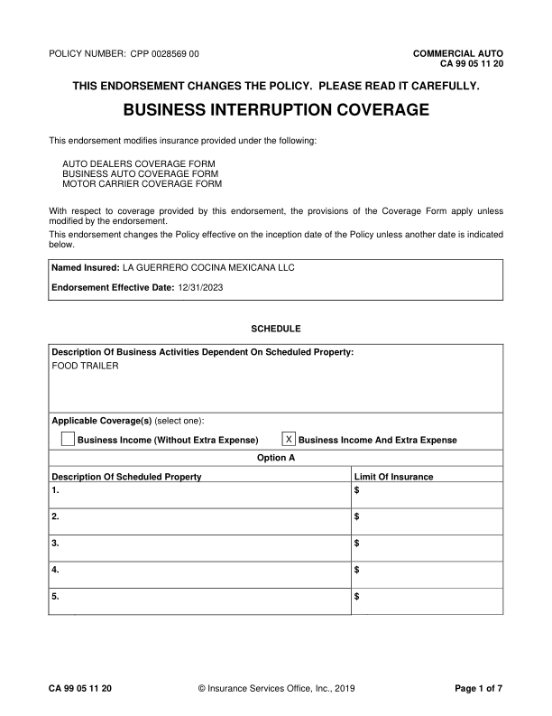
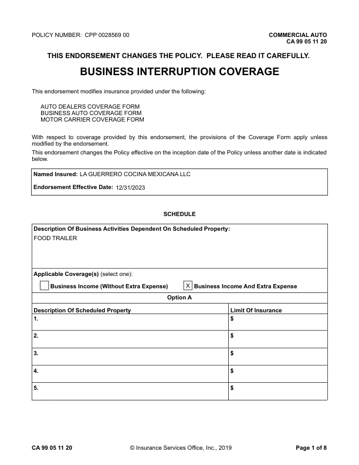
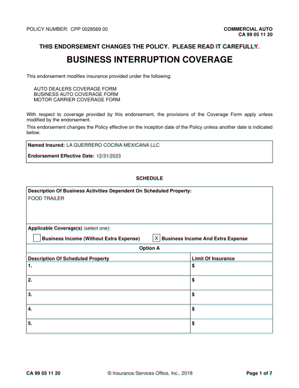
extra h rule at 287.6 (53.2-558.0) extra h rule at 681.4 (54.0-558.0)
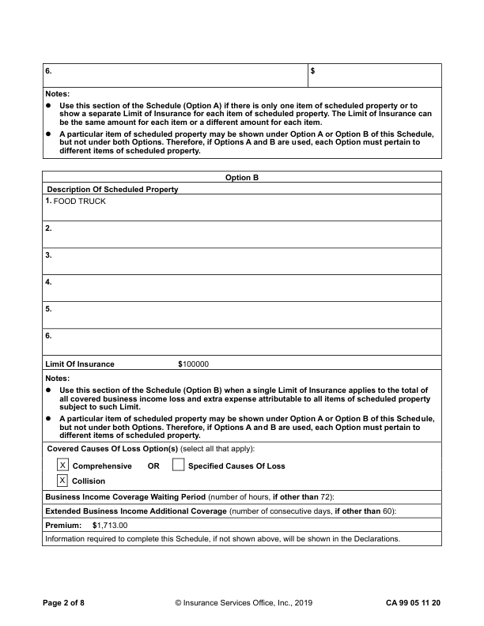
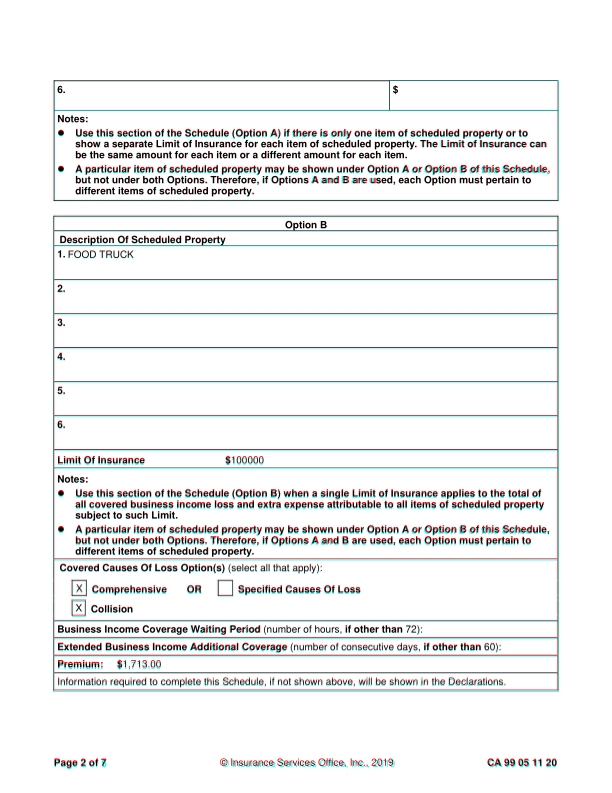
extra h rule at 595.1 (72.0-87.0) extra v rule at 54.4 (81.0-201.0)
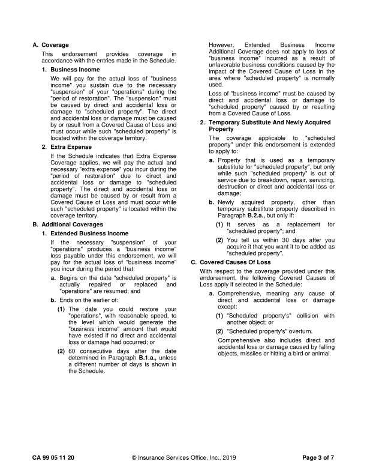
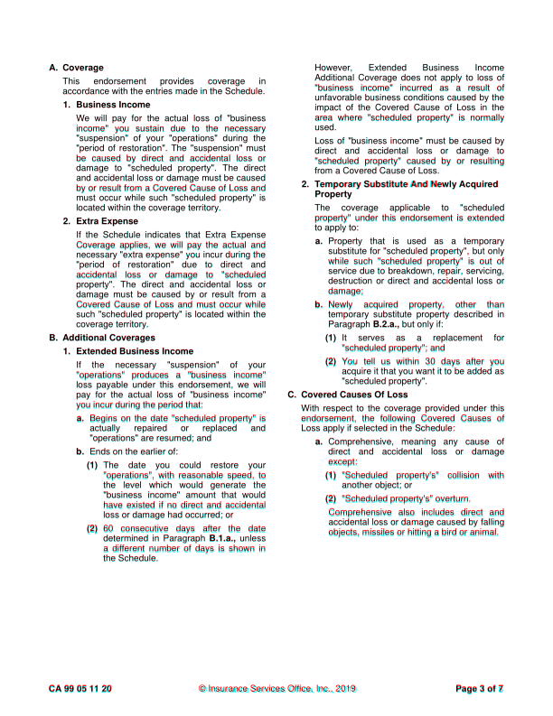
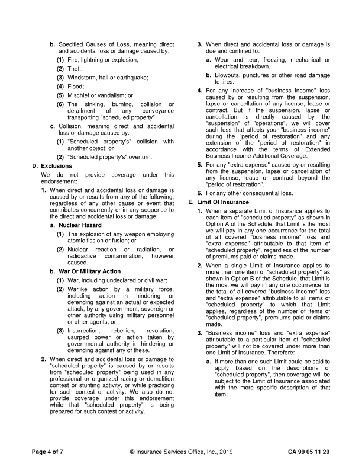
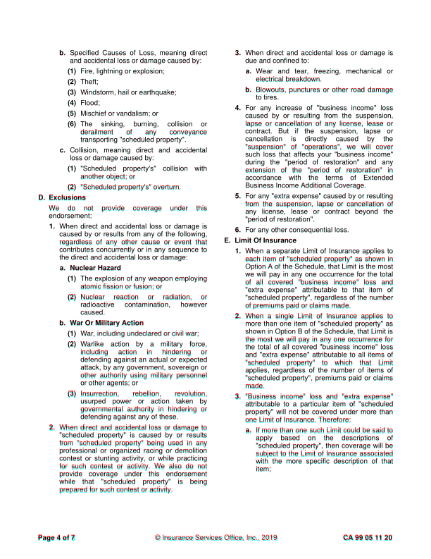
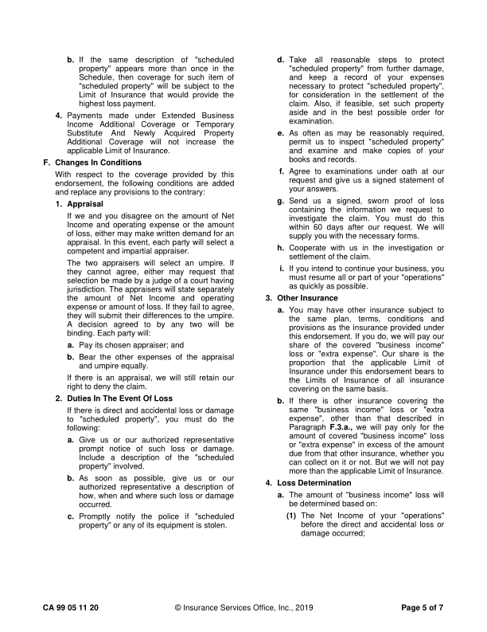
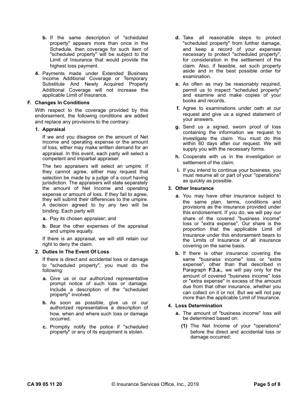
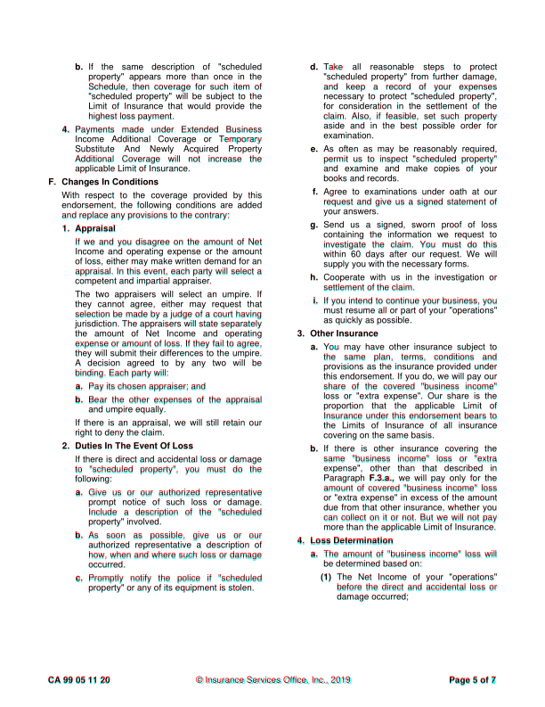
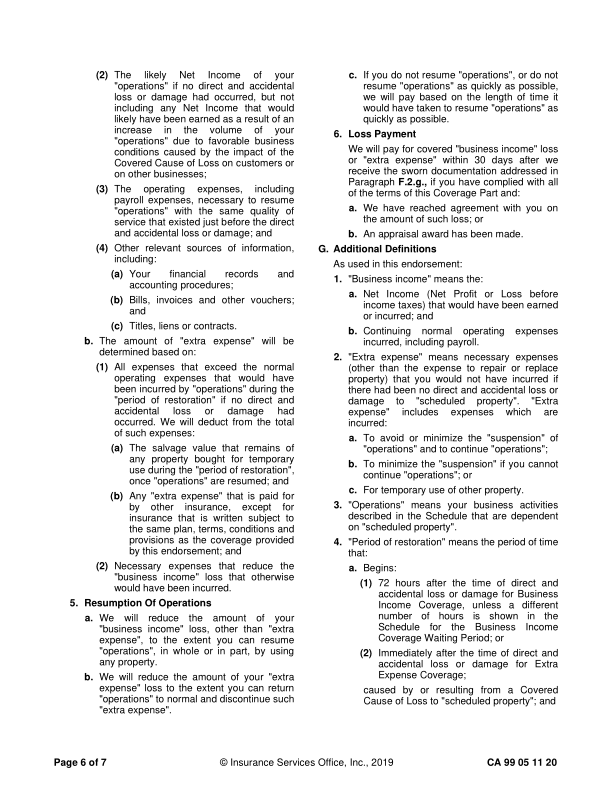
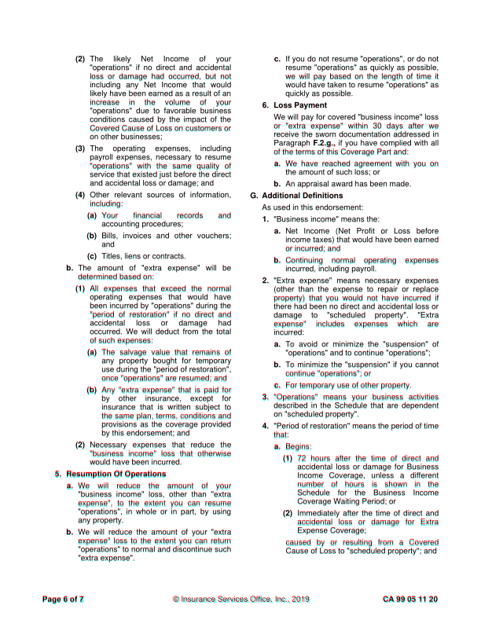
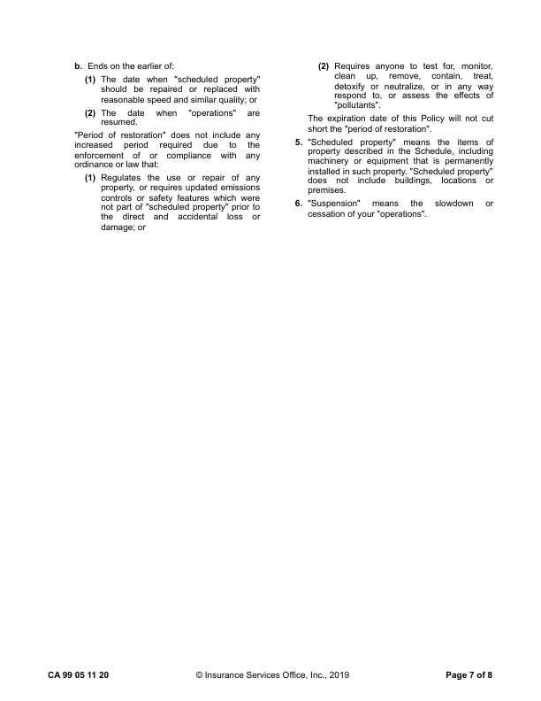